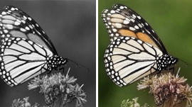
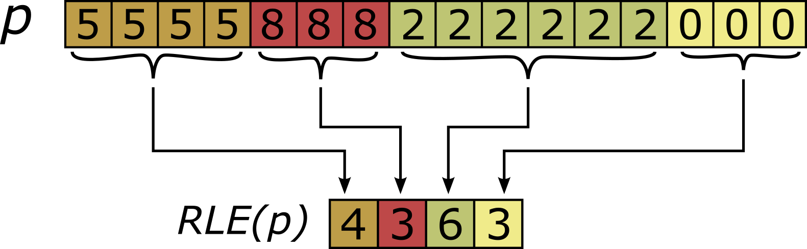
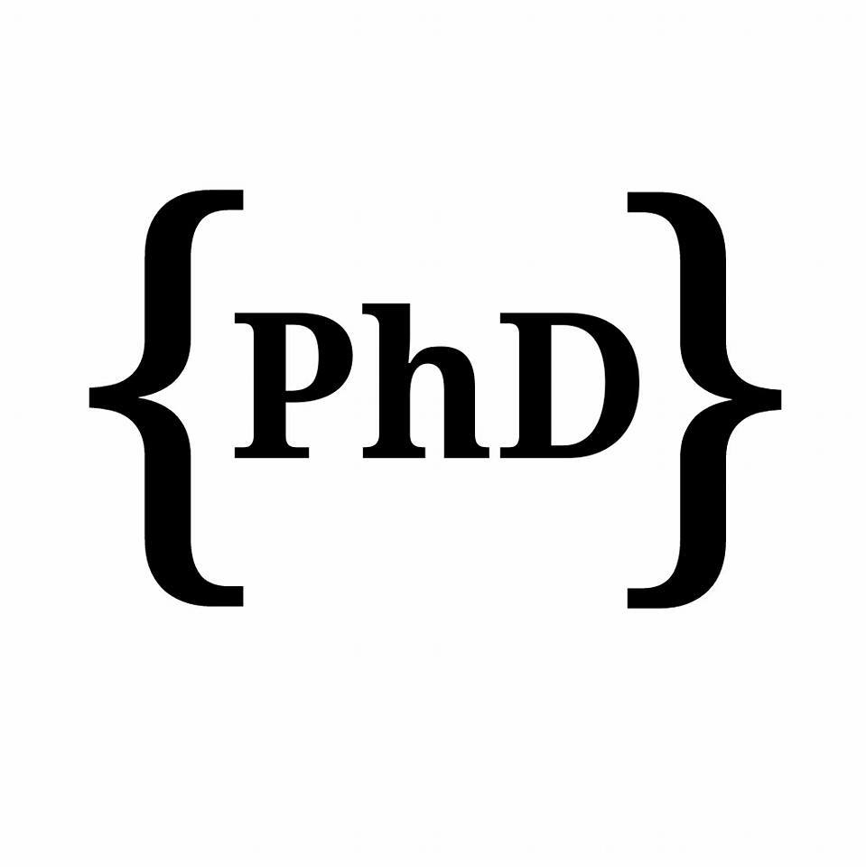

Digital humanities
AI methods for historical photographs, archival metadata and cultural heritage collections.
Computer Vision | Multimodal AI | Visual Heritage
I build computer vision and multimodal AI systems for visual heritage, image time series, and large-scale visual collections.
Currently at CNRS, I work on AI methods for historical photographs and archival metadata within the Humanum PICTORIA ecosystem, connecting research prototypes with usable datasets and tools.
Research directions
AI methods for historical photographs, archival metadata and cultural heritage collections.
Representations for satellite image time series, video sequences and temporal visual patterns.
Research engineering around classification, video summarization, tracking and visual descriptors.
Scientific output
This list uses the same BibTeX display approach as the original page.
Research engineering

A collection of 62,135 digitized photographs of Victor Forbin, designed for historical image analysis and archival metadata research.

Photographic colorization service using modern machine learning models based on neural networks. The project was developed during the DataScientest MLOps curriculum.
A BSD-licensed Python library suite that simplifies AI development by automating tasks in machine learning, media processing and secure file management.
Documentation | OS Helper | Audio Helper | Video Helper | YT Helper | SFTP Helper

Spatio-temporal hand-crafted feature extraction for satellite image time series. The proposed method measures stability using a compression algorithm named Run Length Encoding.

A professional LaTeX template for writing a structured PhD thesis, with predefined environments for chapters, sections, figures, tables, citations, appendices and front matter.
Academic and applied path
Multimodal AI for large-scale analysis of heritage photographs within the Humanum PICTORIA consortium.
Training in automation, deployment and continuous monitoring of machine learning models in production.
Video summarization, image captioning, tagging and visual descriptors.
Lecturer in computer science and researcher at LIPADE.
Image time series analysis involving spatial and temporal information.
Courses and tutorials
Collaborations
Mohamed Chelali | mohamed.t.chelali@gmail.fr | GitHub | ResearchGate